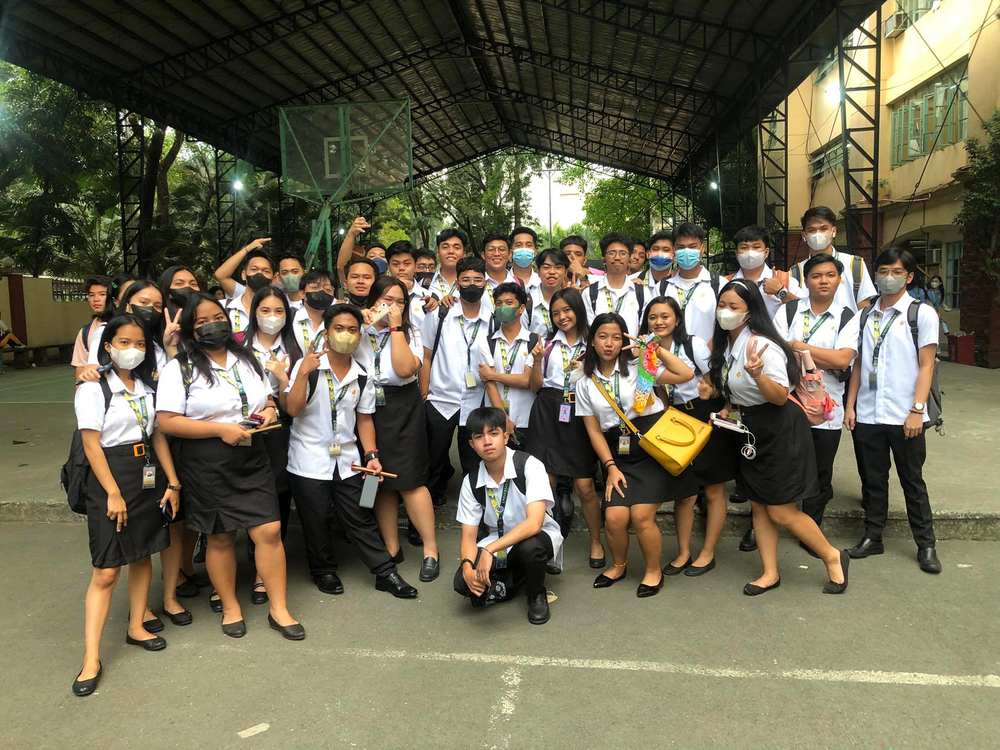
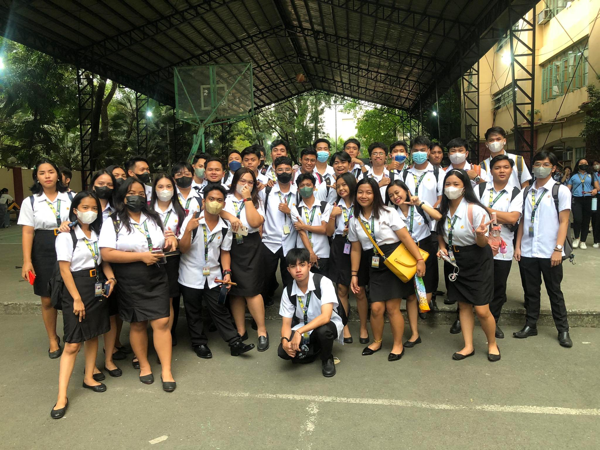
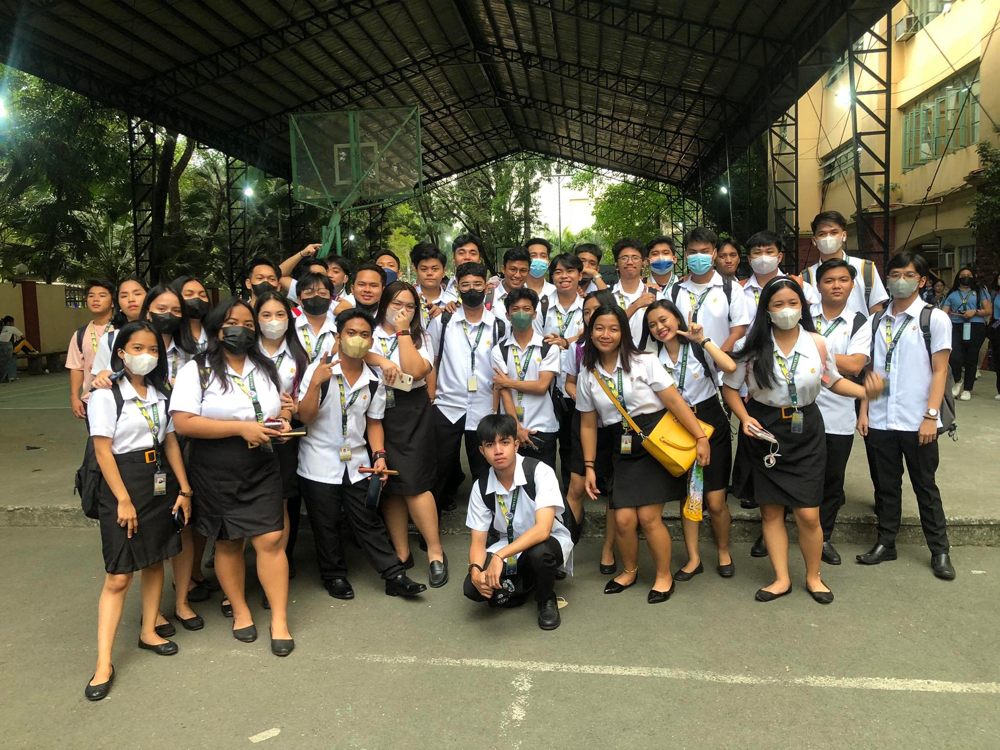

  
College days, I want to be this a super memorable happening. This is was so different in High school days, because you need also to enjoy a lot of things and also focus on your study. My first day in Freshman year was so scare because it was so different, I cannot make friends easily. But a little a progress a was so happy that I will able to make friends to my classmates. They said that when you are in college you need to think and to choose very wisely your circle of friends. A friend that makes you and influence to be a good to you to make your activities and your life better.